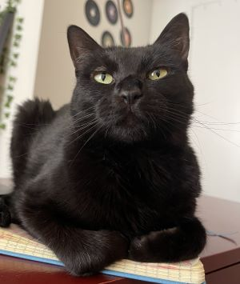

resize copy.jpg)
Hi there! I'm Li and I work in marketing and fundraising currently. But I have always enjoyed learning new skills and topics, especially ones that let me be creative and work on solving problems. Hence, my foray into web dev.
I graduated from UT Austin studying journalism, communications, and marketing. I have a soft spot for jobs that will let me do a bit of good in the world while also getting to express myself.
Outside of work and learning, I love to study languages, read and write, and spend time outdoors. Here's what I'm into at the moment:
This wouldn't be a proper introduction without a mention of my cat, Jupiter!
